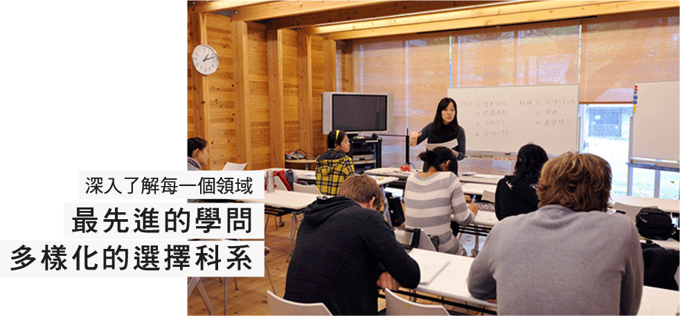

-
得獎
從1949年湯川秀樹，誰贏得了第一個日本諾貝爾獎年，直到赤崎勇先生，誰贏得了諾貝爾物理學獎於2014年，京都大學聯繫，諾貝爾獎得主畢業生將九歲。這是成為最大的亞洲大學贏家數量。也被稱為諾貝爾獎的數學，也被稱為優秀的菲爾茲獎的年輕數學家尊敬的成就，高斯獎是頒發給優秀的研究人員對數學的應用，最高獎，在美國醫學界拉斯克獎，我們已經收到了許多如給誰離開了性能與除醫療國際大獎的優秀領域的人加德納國際獎。此外，被引論文數量，同時在非英語國家的大學已經上升到了281948條評論※。
-
研究力
在京都大學招收約3500教師和研究人員，接受了大批同樣來自世界各地的外國研究人員，我們將形成一個世界級的研究人員群體。目前，10個本科，18所研究生院，14個研究所，已建成由中心和17的下屬機構。雖然保護了“學術自由”是京都大學的傳統，研究人員一直在提升彼此的跨學科研究合作，以迎接世界所面臨的挑戰。
- 
豐富的選擇
在京都，我們將接受學生的10個本科和18個研究生院。在這些本科生和研究生，你將能夠深入了解每一個領域，而且還可以跨學科學習以及您的利益的事情在同一時間。不要擔心，即使不能為日語。當然，得到的是還提供了一定程度的英語。您也可以通過連日本的學費免費參加。在國外京都夥伴大學的合作，我們接受的交換留學生和短期留學的學生。同時雙學位課程與合作大學也開始設置。請來找你當然想從這些課程的學習。
-
學術文化的自由
人力資源豐富創造力的畢業生，為世界頂尖水平的先進研究的基礎上開發，有自成立以來，已建成“學術文化的自由”。珍惜你尊重學生的自由和自治，而所有學生和教職員工超出場堆放的對話，我們致力於不斷獨特的東西。
-
小型研討會
京都教育大學的傳統是“對話”。教師和學生的大約比例為1：6.5。這個數字，也是在日本國際物聯網過程中，京都大學會說，這意味著，這是祝福，為學生的環境。在小型研討會上，學生可以接收各種老師的建議和指導。
-
制度的講座
“亞洲和日本學習京都”制度的講座，為亞洲和日本文化，社會，經濟和環境，同時考慮了大學，日本京都，被確定為系統地學習教師交叉程序功能的優勢下文。 國際學生在京都大學的學生和京都大學，超越了自身，跨學科的對亞洲和日本教育的專業知識，學生加深對日本的了解，日本學生是全球性的亞洲和日本我們的目標是成為為講從觀點。

Home >
為何選擇東大